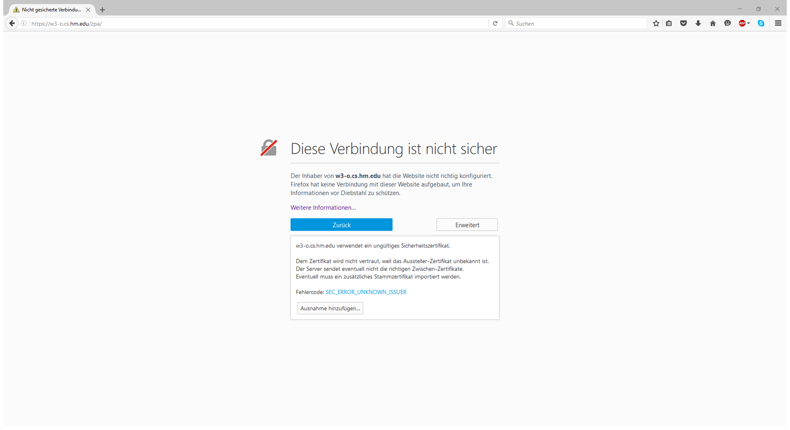
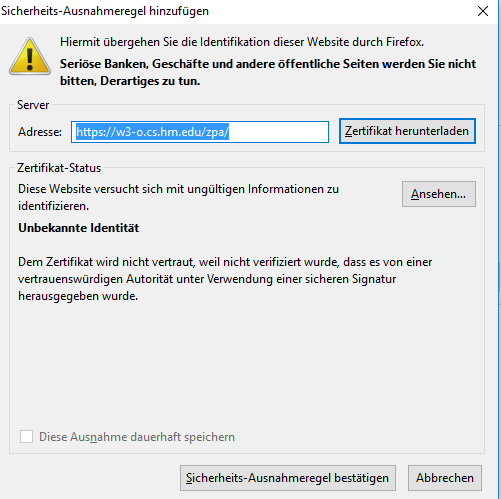
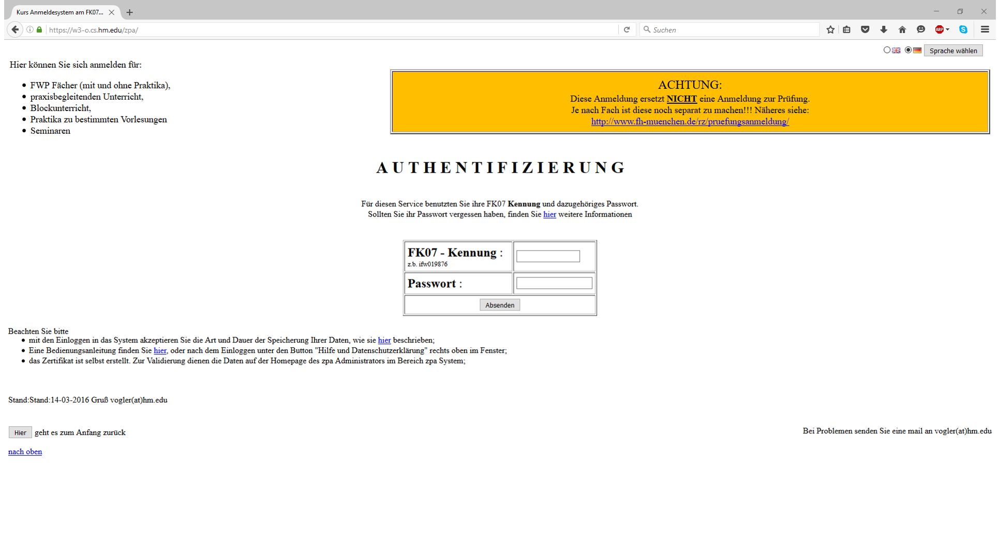
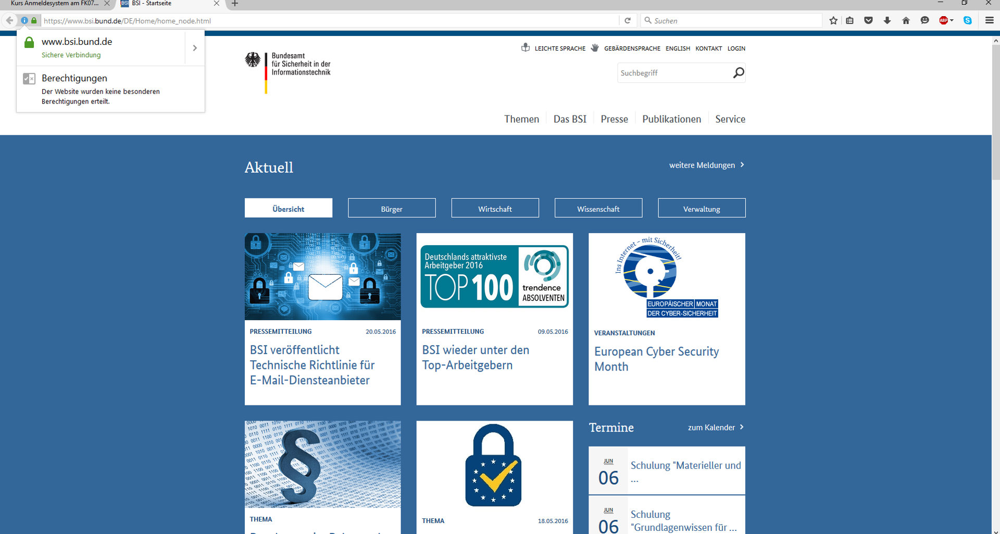

Web of Trust im Internet
- Bei den versuch auf das ZPA mit einer Verschlüsselten verbindung Zuzugreifen bekommt man eine Fehlermeldung, da dem Aussteller des Zertifikates für die sicher Verbindung nicht standardäßig vertraut wird.
- 
- Nun Können wir das Zertifikat in due Liste der Vertrauten Zertifkate aufnehmen.
- 
- Nachdem wir dem Zertifikt nun Vertrauen kommen wir auch Problemlos auf die Seite des ZPA's
- 
- Bei dem Besuch von www.bsi.bund.de bekommen wir keinen solchen Hinweis sondern bekommen direkt die Seite über eine gesicherte Verbinding angezeigt.
- 
- Das liegt daran, dass der Austeller des HTTPS -Zertikates für bsi.bund.de bereits standartmäßig von Firefox vertraut wird
-
Wenn ein HTTPS-Zertifikat von einer Quelle Signiert wurde der ich bereits (standartmäßig) vertraue, so vertraue ich auch diesem Zertifkat und muss es nicht erst Bestätigen.
Damit wird es möglich mit einer Sicheren Verbundung zu surfen ohne erst des Zertifikat einer jeden Webseite selber zu Bestätigen.